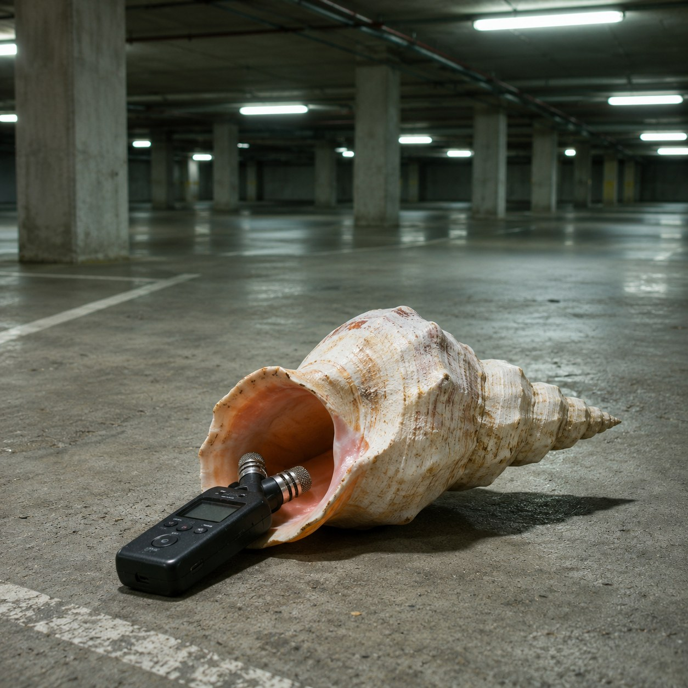
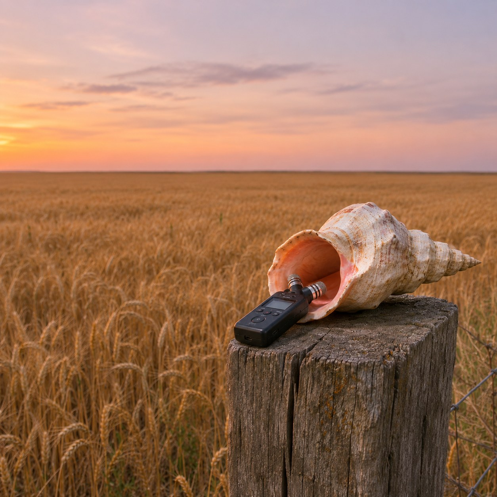

The Sea From Here


Hold a shell to your ear and you hear the sea. Children are told this, and a few years later they are told it is not true. The sound is not the sea. Some say it is your own blood. It is not that either.
It is the room. Every room is full of sounds too faint to notice: traffic three streets away, a fridge, air in a vent, people talking somewhere else. The hollow of the shell catches them, lets some of them ring and swallows the rest. What comes out is a soft rushing that rises and falls, and we call it the sea because that is the only name we were ever given for it.
So I took a large shell far inland and recorded the sea it made wherever I held it. An underground car park at night. A wheat field at the end of summer, hundreds of miles from any coast. A laundrette, a stairwell, a church at noon. Forty recordings. Every one sounds like waves. Every one is different, because every room is.
John Cage once went into a room at Harvard built to be perfectly silent, and heard two sounds anyway, one high and one low. He was told the high one was his nervous system and the low one his blood. There is no silence, he decided, only sound we have not chosen to hear. Take a shell into that room and it would give you nothing. No sea at all. The sea needs the world to be making noise.
The shell does not remember the shore. It never held the sea. It holds whatever is around it, and turns it into the one thing we agreed it means.
In the car park I hear the tide. I know it is a fan and a lorry on the ramp. I hear the tide anyway.